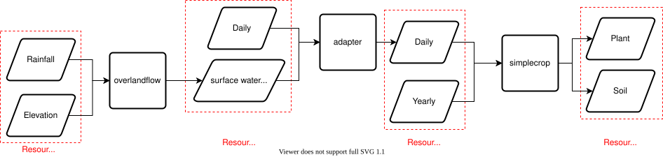

Combining Overland Flow and Simple Crop¶
Running Overland Flow on its Own¶
The overland flow model routes water over a landscape and determines how much water infiltrates particular cells in response to rain events and elevation data. Rainfall in this model is assumed to occur instantaneously and rainfall events are assumed to be independent (so a large rainfall event on a previous day has no bearing on the present day).
In order to run the model we first need to import some source and sink types as well as classes for calling off to CLI models and building requests.
import itertools
import os.path
import netCDF4
from meillionen.client import ClientFunctionModel
from meillionen.experiment import Experiment, PathSettings, Trial
from meillionen.handlers import NetCDFHandler, PandasHandler
from meillionen.resource import \
FileResource, FeatherResource, NetCDFResource, ParquetResource
from prefect import task, Flow
os.environ['SIMPLECROP'] = 'simplecrop'
os.environ['RUST_BACKTRACE'] = '1'
BASE_DIR = '../../examples/crop-pipeline'
INPUT_DIR = os.path.join(BASE_DIR, 'workflows/inputs')
OUTPUT_DIR = os.path.join(BASE_DIR, 'workflows/outputs')
experiment = Experiment(
sinks=PathSettings(base_path=OUTPUT_DIR),
sources=PathSettings(base_path=INPUT_DIR)
)
trial = experiment.trial("2021-05-26")
and build a request to call our model with.
overlandflow = ClientFunctionModel.from_path(
name='overlandflow',
path=os.path.join(BASE_DIR, 'overlandflow/model.py'),
trial=trial
)
We also need to create sources and sinks to describe our data
elevation = FileResource(".asc")
weather = FeatherResource()
sources = {
'elevation': elevation,
'weather': weather
}
Then call the overland flow model with our request (which will create files on the file system)
sinks = overlandflow.run(sources=sources)
sinks['soil_water_infiltration__depth'].to_dict()
{'path': '../../examples/crop-pipeline/workflows/outputs/2021-05-26/soil_water_infiltration__depth.nc',
'variable': 'soil_water_infiltration__depth'}
Running Simple Crop on its Own¶
simplecrop is a model of yearly crop growth that operates on the command line. When called in the current directory with no arguments it expects that there is a data folder. It expects that the data folder contains five files
irrig.inp- daily irrigationplant.inp- plant growth parameters for the simulationsimctrl.inp- simulation reporting parameterssoil.inp- soil characteristic parameters for the simulationweather.inp- daily weather data (with variables like maximum temperature, solar energy flux)
simplecrop also expects there to be an output folder. After the model has run it will populate the output folder with three files
plant.out- daily plant characteristicssoil.out- daily soil characteristicswbal.out- summary soil and plant statistics about simulation
In order to wrap this model in an interface that allows you to run the model without manually building those input files and manually converting the output files into a format conducive to analysis we need to have a construct the input files and parse the output files. Fortunately we have such a model wrapper already.
from meillionen.client import ClientFunctionModel
import pandas as pd
run_simple_crop = ClientFunctionModel.from_path(
name='simplecrop',
path='simplecrop_omf',
trial=trial
)
sources = {
'daily': FeatherResource(),
'yearly': FeatherResource()
}
sinks = {
'plant': FeatherResource(),
'soil': FeatherResource(),
'tempdir': FileResource(ext="", name='tmp')
}
s = run_simple_crop.run(sources=sources, sinks=sinks)
soil_df = PandasHandler(run_simple_crop.sink('soil')).load(s['soil'])
soil_df
| soil_daily_drainage | soil_daily_infiltration | soil_daily_runoff | soil_evaporation | soil_evapotranspiration | soil_water_deficit_stress | soil_water_excess_stress | soil_water_profile_ratio | soil_water_storage_depth | plant_potential_transpiration | day | |
|---|---|---|---|---|---|---|---|---|---|---|---|
| 0 | 1.86 | 0.0 | 0.0 | 2.23 | 2.25 | 1.000 | 1.0 | 1.800 | 260.970001 | 0.02 | 3 |
| 1 | 2.25 | 0.0 | 0.0 | 2.62 | 2.64 | 1.000 | 1.0 | 1.821 | 264.089996 | 0.02 | 6 |
| 2 | 0.94 | 0.0 | 0.0 | 1.31 | 1.32 | 1.000 | 1.0 | 1.749 | 253.639999 | 0.01 | 9 |
| 3 | 0.57 | 0.0 | 0.0 | 2.53 | 2.56 | 1.000 | 1.0 | 1.718 | 249.089996 | 0.02 | 12 |
| 4 | 0.00 | 0.0 | 0.0 | 1.89 | 1.94 | 1.000 | 1.0 | 1.666 | 241.539993 | 0.02 | 15 |
| ... | ... | ... | ... | ... | ... | ... | ... | ... | ... | ... | ... |
| 94 | 0.00 | 0.0 | 0.0 | 0.61 | 4.04 | 0.566 | 1.0 | 1.067 | 154.759995 | 1.55 | 282 |
| 95 | 0.00 | 0.0 | 0.0 | 0.26 | 1.64 | 0.544 | 1.0 | 1.049 | 152.050003 | 0.56 | 285 |
| 96 | 0.00 | 0.0 | 0.0 | 0.46 | 2.92 | 0.499 | 1.0 | 1.011 | 146.649994 | 0.88 | 288 |
| 97 | 0.00 | 0.0 | 0.0 | 0.75 | 4.84 | 0.449 | 1.0 | 0.971 | 140.729996 | 1.25 | 291 |
| 98 | 0.00 | 0.0 | 0.0 | 0.65 | 4.18 | 0.422 | 1.0 | 0.948 | 137.470001 | 0.95 | 293 |
99 rows × 11 columns
Using Prefect to Feed Overland Flow Results into Simple Crop¶
Now we’ll combine overlandflow with simplecrop. This will require an adapter to augment the daily source data fed into simplecrop with the depth of water that has infiltrated that cell. The workflow is shown below without the details of calling simplecrop for each x, y coordinate in the map.

from meillionen.client import ResourceBuilder
from pyarrow.dataset import partitioning
import pyarrow as pa
import pandas as pd
import pathlib
trial = experiment.trial("simplecrop-parallelism")
overlandflow_sources = {
'elevation': FileResource(ext='.asc'),
'weather': FeatherResource()
}
overlandflow = ClientFunctionModel.from_path(
name='overlandflow',
path=os.path.join(BASE_DIR, 'overlandflow/model.py'),
trial=trial)
simplecrop_sinks = {
'tempdir': FileResource(ext="", name="tmp")
}
simplecrop_partitioning = partitioning(
pa.schema([("x", pa.int32()), ("y", pa.int32())]))
simplecrop = ClientFunctionModel.from_path(
name='simplecrop_omf',
path='simplecrop_omf',
sinks=simplecrop_sinks,
trial=trial,
partitioning=simplecrop_partitioning)
class DailyRainfallCreator(ResourceBuilder):
def __init__(self, settings, partitioning, validator):
self.handler = PandasHandler(validator)
super().__init__(name='daily', settings=settings, partitioning=partitioning)
def save(self, daily_df, rainfall, partition):
daily_df['rainfall'] = rainfall
daily = self._complete(FeatherResource(), partition=partition)
self.handler.save(daily, data=daily_df)
return daily
daily_df = pd.read_feather(os.path.join(trial.sources.base_path, 'daily.feather'))
yearly = FeatherResource().build(settings=trial.sources, name='yearly')
daily_rainfall_creator = DailyRainfallCreator(
settings=trial.sinks,
partitioning=simplecrop_partitioning,
validator=simplecrop.source('daily')
)
@task()
def run_overland_flow():
sources = {
'elevation': FileResource(ext=".asc"),
'weather': FeatherResource()
}
sinks = overlandflow.run(sources=sources)
return sinks['soil_water_infiltration__depth']
@task()
def chunkify_soil_water_infiltration_depth(swid):
variable = NetCDFHandler(overlandflow.sink('soil_water_infiltration__depth')).load(swid)
return [{'soil_water_infiltration__depth': variable[x, y, :], 'x': x, 'y': y}
for (x,y) in itertools.product(range(10,13), range(21,24))]
@task()
def simplecrop_process_chunk(data):
soil_water_infiltration__depth = data['soil_water_infiltration__depth']
x, y = data['x'], data['y']
daily = daily_rainfall_creator.save(
daily_df,
soil_water_infiltration__depth,
partition=dict(x=x, y=y))
sources = {
'daily': daily,
'yearly': yearly
}
sinks = simplecrop.run(sources=sources, partition=dict(x=x, y=y))
with Flow('crop_pipeline') as flow:
overland_flow = run_overland_flow()
surface_water_depth_chunks = chunkify_soil_water_infiltration_depth(overland_flow)
yield_chunks = simplecrop_process_chunk.map(surface_water_depth_chunks)
flow.run()
[2021-05-31 17:22:30-0700] INFO - prefect.FlowRunner | Beginning Flow run for 'crop_pipeline'
[2021-05-31 17:22:30-0700] INFO - prefect.TaskRunner | Task 'run_overland_flow': Starting task run...
[2021-05-31 17:22:35-0700] INFO - prefect.TaskRunner | Task 'run_overland_flow': Finished task run for task with final state: 'Success'
[2021-05-31 17:22:35-0700] INFO - prefect.TaskRunner | Task 'chunkify_soil_water_infiltration_depth': Starting task run...
[2021-05-31 17:22:35-0700] INFO - prefect.TaskRunner | Task 'chunkify_soil_water_infiltration_depth': Finished task run for task with final state: 'Success'
[2021-05-31 17:22:35-0700] INFO - prefect.TaskRunner | Task 'simplecrop_process_chunk': Starting task run...
[2021-05-31 17:22:35-0700] INFO - prefect.TaskRunner | Task 'simplecrop_process_chunk': Finished task run for task with final state: 'Mapped'
[2021-05-31 17:22:35-0700] INFO - prefect.TaskRunner | Task 'simplecrop_process_chunk[0]': Starting task run...
[2021-05-31 17:22:37-0700] INFO - prefect.TaskRunner | Task 'simplecrop_process_chunk[0]': Finished task run for task with final state: 'Success'
[2021-05-31 17:22:37-0700] INFO - prefect.TaskRunner | Task 'simplecrop_process_chunk[1]': Starting task run...
[2021-05-31 17:22:38-0700] INFO - prefect.TaskRunner | Task 'simplecrop_process_chunk[1]': Finished task run for task with final state: 'Success'
[2021-05-31 17:22:38-0700] INFO - prefect.TaskRunner | Task 'simplecrop_process_chunk[2]': Starting task run...
[2021-05-31 17:22:40-0700] INFO - prefect.TaskRunner | Task 'simplecrop_process_chunk[2]': Finished task run for task with final state: 'Success'
[2021-05-31 17:22:40-0700] INFO - prefect.TaskRunner | Task 'simplecrop_process_chunk[3]': Starting task run...
[2021-05-31 17:22:41-0700] INFO - prefect.TaskRunner | Task 'simplecrop_process_chunk[3]': Finished task run for task with final state: 'Success'
[2021-05-31 17:22:41-0700] INFO - prefect.TaskRunner | Task 'simplecrop_process_chunk[4]': Starting task run...
[2021-05-31 17:22:42-0700] INFO - prefect.TaskRunner | Task 'simplecrop_process_chunk[4]': Finished task run for task with final state: 'Success'
[2021-05-31 17:22:42-0700] INFO - prefect.TaskRunner | Task 'simplecrop_process_chunk[5]': Starting task run...
[2021-05-31 17:22:44-0700] INFO - prefect.TaskRunner | Task 'simplecrop_process_chunk[5]': Finished task run for task with final state: 'Success'
[2021-05-31 17:22:44-0700] INFO - prefect.TaskRunner | Task 'simplecrop_process_chunk[6]': Starting task run...
[2021-05-31 17:22:45-0700] INFO - prefect.TaskRunner | Task 'simplecrop_process_chunk[6]': Finished task run for task with final state: 'Success'
[2021-05-31 17:22:45-0700] INFO - prefect.TaskRunner | Task 'simplecrop_process_chunk[7]': Starting task run...
[2021-05-31 17:22:47-0700] INFO - prefect.TaskRunner | Task 'simplecrop_process_chunk[7]': Finished task run for task with final state: 'Success'
[2021-05-31 17:22:47-0700] INFO - prefect.TaskRunner | Task 'simplecrop_process_chunk[8]': Starting task run...
[2021-05-31 17:22:48-0700] INFO - prefect.TaskRunner | Task 'simplecrop_process_chunk[8]': Finished task run for task with final state: 'Success'
[2021-05-31 17:22:48-0700] INFO - prefect.FlowRunner | Flow run SUCCESS: all reference tasks succeeded
<Success: "All reference tasks succeeded.">
from pyarrow.dataset import dataset
plant_df = dataset(
os.path.join(OUTPUT_DIR, 'simplecrop-parallelism/plant'),
partitioning=simplecrop_partitioning).to_table().to_pandas()
plant_df
| air_accumulated_temp | plant_leaf_area_index | plant_leaf_count | plant_matter | plant_matter_canopy | plant_matter_fruit | plant_matter_root | day | x | y | |
|---|---|---|---|---|---|---|---|---|---|---|
| 0 | 0.000000 | 0.01 | 2.00 | 0.300000 | 0.250000 | 0.000000 | 0.050000 | 121 | 10 | 21 |
| 1 | 0.000000 | 0.02 | 2.20 | 0.650000 | 0.550000 | 0.000000 | 0.100000 | 123 | 10 | 21 |
| 2 | 0.000000 | 0.03 | 2.50 | 1.200000 | 1.020000 | 0.000000 | 0.180000 | 126 | 10 | 21 |
| 3 | 0.000000 | 0.04 | 2.79 | 1.910000 | 1.620000 | 0.000000 | 0.290000 | 129 | 10 | 21 |
| 4 | 0.000000 | 0.06 | 3.09 | 2.800000 | 2.380000 | 0.000000 | 0.420000 | 132 | 10 | 21 |
| ... | ... | ... | ... | ... | ... | ... | ... | ... | ... | ... |
| 585 | 186.050003 | 1.49 | 12.06 | 1130.699951 | 465.390015 | 583.190002 | 82.129997 | 282 | 30 | 30 |
| 586 | 223.000000 | 1.34 | 12.06 | 1138.880005 | 465.390015 | 591.359985 | 82.129997 | 285 | 30 | 30 |
| 587 | 243.500000 | 1.25 | 12.06 | 1154.410034 | 465.390015 | 606.900024 | 82.129997 | 288 | 30 | 30 |
| 588 | 277.649994 | 1.11 | 12.06 | 1170.739990 | 465.390015 | 623.219971 | 82.129997 | 291 | 30 | 30 |
| 589 | 304.899994 | 0.99 | 12.06 | 1178.780029 | 465.390015 | 631.270020 | 82.129997 | 293 | 30 | 30 |
590 rows × 10 columns
BMI Interface¶
Simple crop can also be used with an adapter to create a BMI Interface (with the additional set_partition method
from meillionen.pymt import PyMTFunctionModel
simplecrop_bmi = PyMTFunctionModel()
simplecrop_bmi.initialize(model=simplecrop)
simplecrop_bmi.get_input_var_names()
simplecrop_bmi.get_output_var_names()
simplecrop_bmi.set_value('daily', FeatherResource())
simplecrop_bmi.set_value('yearly', FeatherResource())
simplecrop_bmi.set_partition({'x': 30, 'y': 30})
simplecrop_bmi.update()
plant = simplecrop_bmi.get_value('plant')
soil = simplecrop_bmi.get_value('soil')
simplecrop_bmi.finalize()
plant.to_dict()
{'path': '../../examples/crop-pipeline/workflows/outputs/simplecrop-parallelism/plant/30/30/plant.parquet'}
soil.to_dict()
{'path': '../../examples/crop-pipeline/workflows/outputs/simplecrop-parallelism/soil/30/30/soil.parquet'}